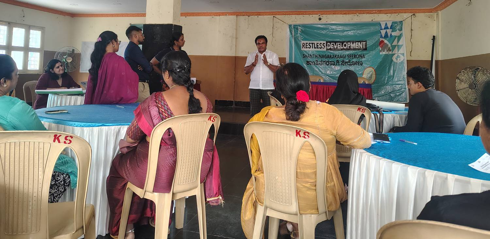
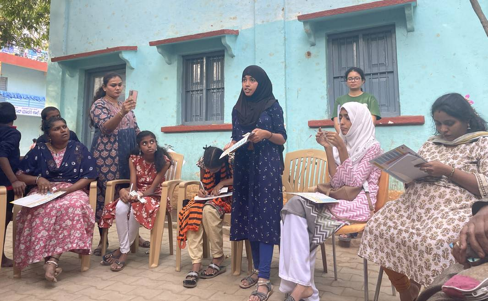
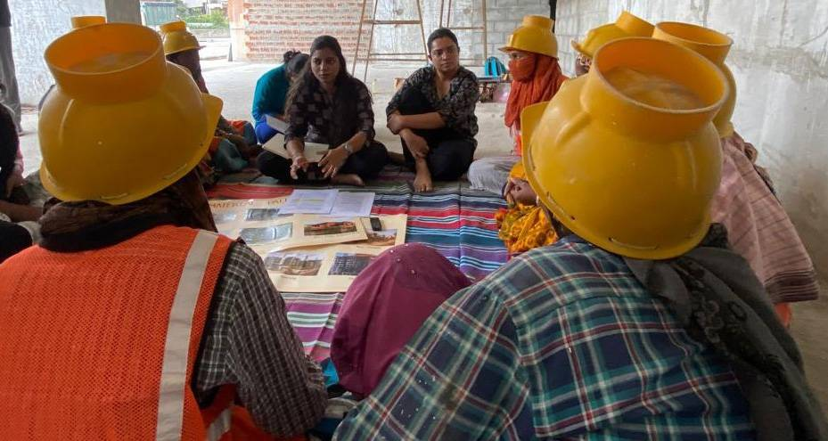
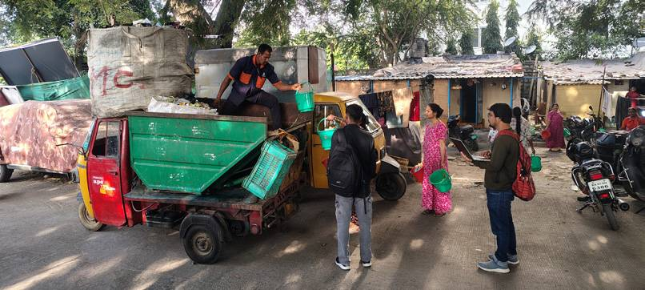
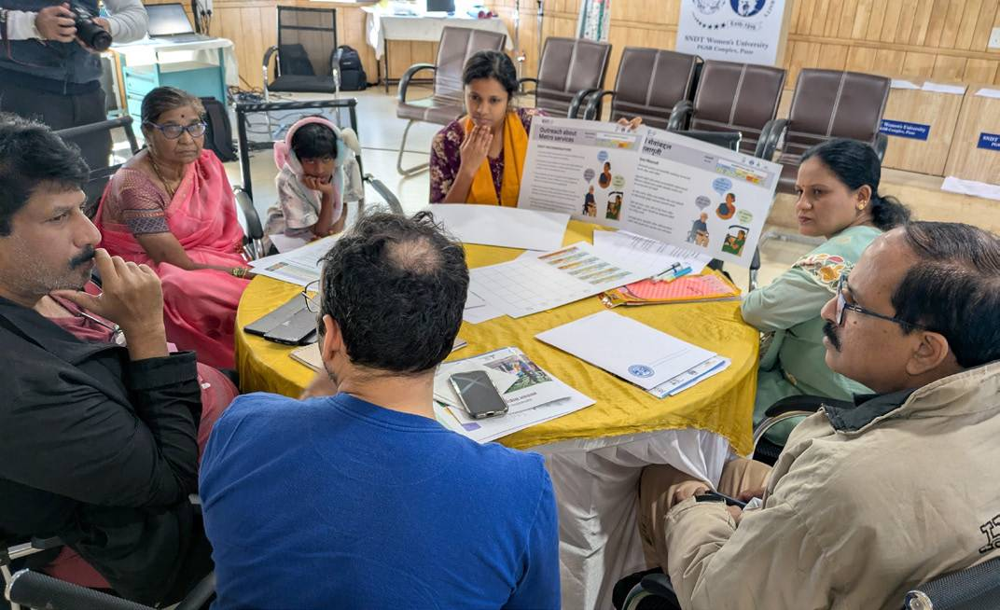
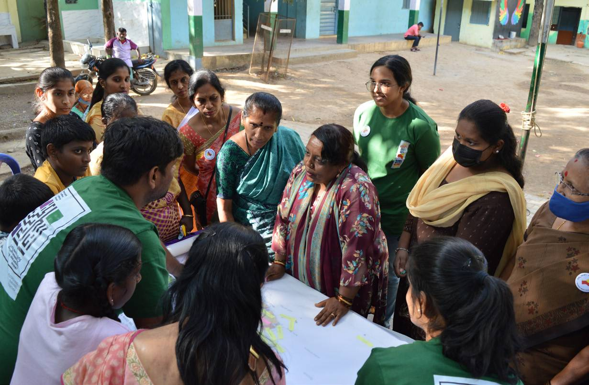

The challenge
Climate change is not a single challenge. In Bengaluru it reaches into health and wellbeing, housing, water, livelihoods and mobility all at once.
Cities across the world, especially in the Global South, are grappling with the wicked challenges of climate change and rapid urban transformation. The pressures on the right are straining the resilience of cities.
Bengaluru faces these complex vulnerabilities, but it also offers an opportunity: an active civil society and a long history of citizen-led action. Yet despite the growing urgency, efforts to address climate issues have often remained isolated.
There is a critical need to connect hyperlocal lived experience and evidence from the communities facing the harshest climate vulnerabilities to city-level decision-making, and to other Global South cities facing similar challenges.
- Rising temperatures Heat
- Shrinking green and blue spaces Ecology
- Water stress Water
- Air pollution Health
- Waste management Waste
- Distressed migration from rural areas and smaller towns Migration
- Widening urban inequalities Equity

The response
A collective, flexible, multi-stakeholder initiative that bridges hyperlocal climate realities and city-level strategy.
The FFF partners came together in 2022 in response to the urgent need for collaborative, systemic and inclusive climate action in Bengaluru. Nine local and international organisations, each already working on part of urban resilience, saw the value in pooling their efforts to strengthen civil society collaboration, address city-specific climate vulnerabilities and empower marginalised communities.
The Forum amplifies diverse voices and connects community-led action to larger policy platforms such as the Bengaluru Climate Action and Resilience Plan (BCAP).
Since its inception, FFF has built a flexible Community of Practice. By engaging at every level, with communities, with policymakers and across the civic ecosystem, it has amplified under-represented voices, informed collective advocacy and begun to show how a city like Bengaluru can chart a fairer path to climate resilience.
Tackling climate change needs both immediate, community-rooted action and long-term structural shifts. That is a lesson for cities across the Global South: locally rooted collectives connected to wider urban agendas are key to fair urban transitions on a warming planet.






Watch the filmSee the Forum in actionFair Futures Forum · Click to play
The Forum's logo brings together people, the city, nature and the systems that connect them. Hands hold the circle of the city; the shift from blue to green stands for the move from rapid urbanisation to a greener Bengaluru.